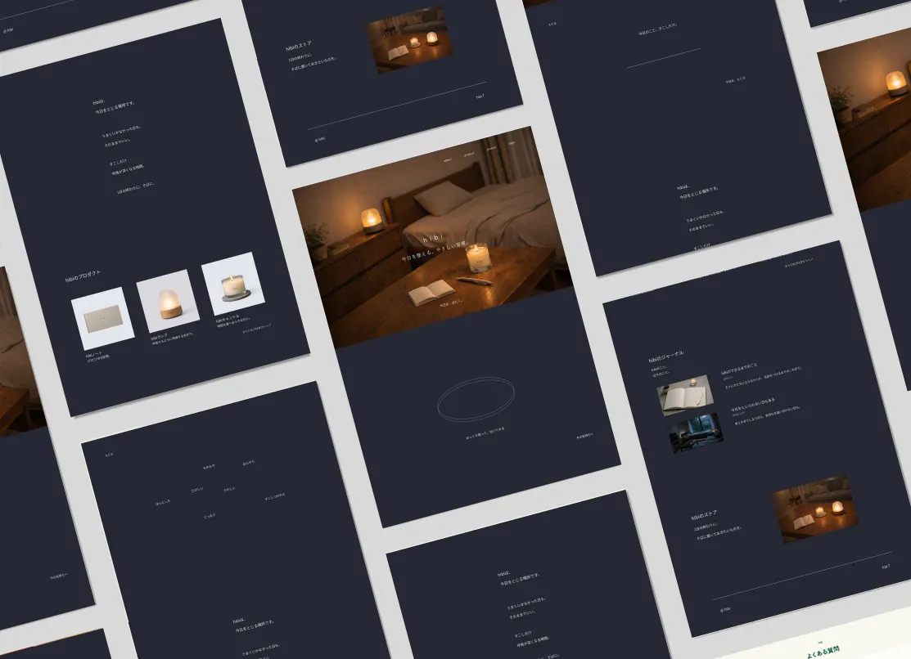
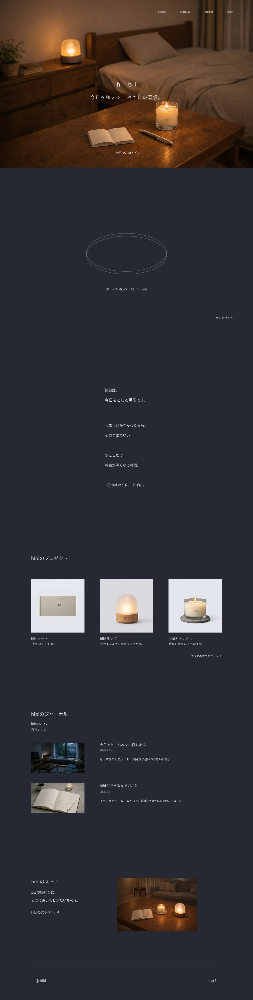
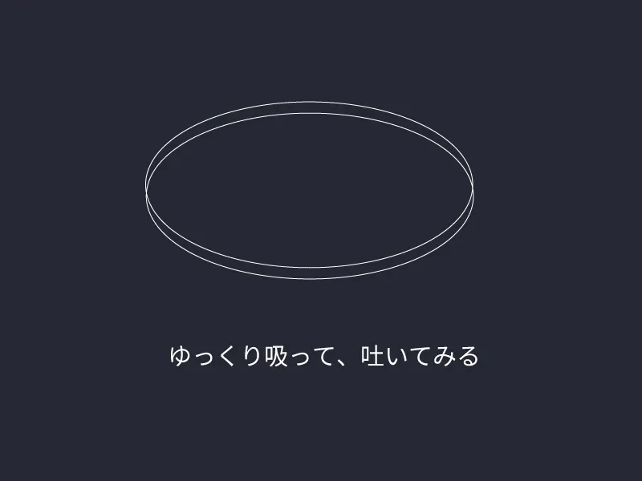
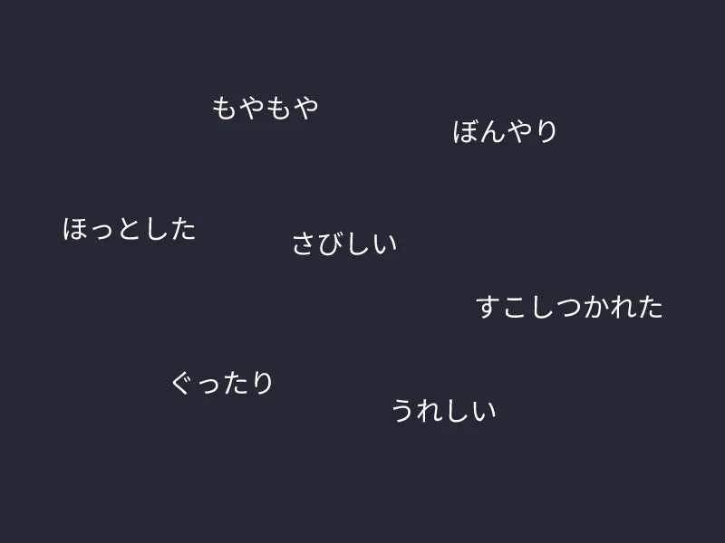
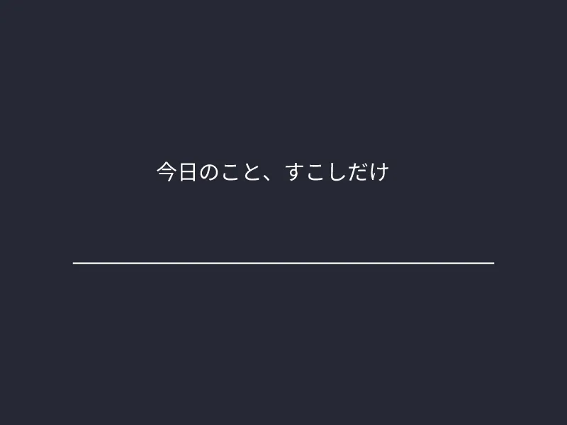
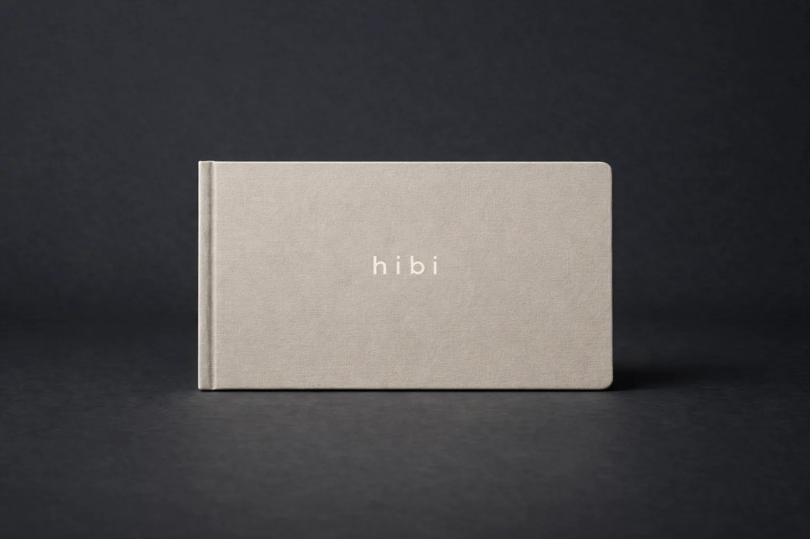
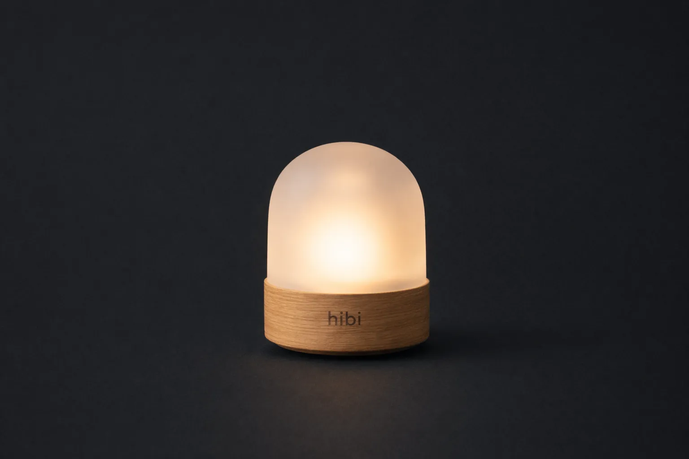
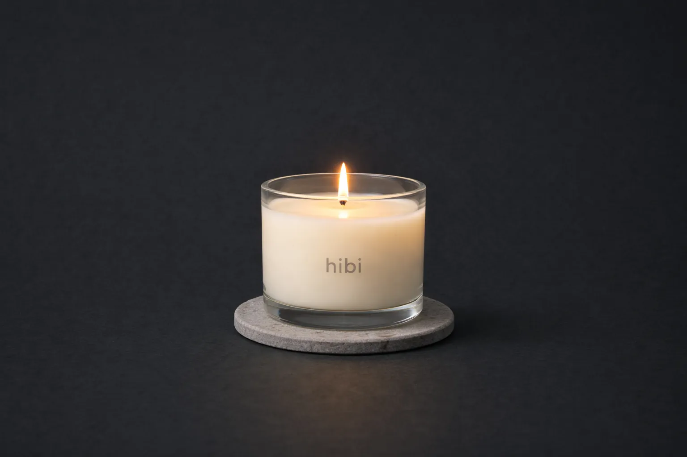

概要
セルフケアブランド hibi のブランドサイト制作のデザインカンプの段階です。
hibiは「今日を整える、やさしい習慣」をコンセプトに、それぞれの1日の終わりに寄り添うD2Cブランドです。1日の区切りをつけるデジタル体験からプロダクトに結びつけることで、日常の習慣へと自然につながる導線を設計しました。落ち着いた配色と装飾を最小限にした余白のあるデザインで、ゆったりと呼吸できるような空気感を表しています。

- 忙しい日常の中で、1日を振り返る習慣を持つきっかけが少ない
- セルフケア商品は機能説明が中心になりやすく、思想や体験価値を伝えるブランドサイトがない
- 1日に区切りをつけ、そのままの自分を受け入れられる体験ができるブランドサイトをつくる
- デジタル体験とプロダクトを組み合わせ、日常の中で続けられるセルフケア習慣を提案する
- 都市部で働く20代後半〜30代の男女
- SNSや仕事などで疲れを感じていて、リラックスできる習慣を求めている人
- サステナブルな素材・シンプルなデザインに惹かれるライフスタイルの人
- それぞれの「1日の終わり」にそばにあるブランド
- 誰かにとっては23時、誰かにとっては5時—— 1人ひとりの気持ちがほどける瞬間に寄り添う
- 応援しない、正論を言わない、そのままを受け止める「小さな習慣」を届ける
- 今日を整える、やさしい習慣。
- hibiは、今日をとじる場所です。うまくいかなかった日も、そのままでいい。
- すこしだけ呼吸が深くなる時間。1日の終わりに、そばに。

デザイン設計
1日の終わりの静かな時間を表現するため、背景には夜を連想させる深いネイビーを使用し、温かみを感じるブラウンをアクセントカラーとして配置しました。余白や行間を広めに取り、ゆったりと呼吸できるような空気感を意識しています。また、hibiのプロダクトが映っている寝る前の部屋の写真を使用することで、hibiのある夜の時間を想像できるようにしました。装飾は最小限に抑え、静かな世界観を保つことで、ユーザーが自然とサイトに没入できるデザインを目指しました。
情報設計
ブランドの世界観に自然に入り込めるよう、トップ画像ではhibiのある夜の時間を提示し、その後に「今日を区切るデジタル体験」を配置しています。ユーザーが気分を選び、短い言葉を書き残すことで、1日を区切る体験ができるようにしました。その後、ブランドのコンセプト、プロダクト、ジャーナルという構成にすることで、ブランドの思想から具体的な商品、そして日常の習慣へと段階的に理解が深まる流れを設計しています。ジャーナルでは「今日を終わらせられない日について」などの読み物を通して、ブランドの背景や思想を伝え、ユーザーがhibiの価値観に共感できるようなコンテンツ設計としました。
デジタル体験



画面中央の楕円がゆっくりと大きくなったり、小さくなったりして深呼吸を促します。
画面上に7つの気分がランダムで表示されます。今の気分を選んでもらいます。
一言日記のように記入できます。書きたくないときは空白でも次に進めます。
hibiのプロダクト

1行だけの日記帳

呼吸するように明滅するあかり

燃焼時間で選べる灯火
ブランドの展開
ナイトルーティーンとして生活に入り込む習慣設計を軸に収益化を考えました。入口として無料のデジタル体験を提供し、hibiノートやランプ、キャンドル、ピローミスト、ティー、お香などのプロダクトへ。サステナブルな素材を用いた消耗品中心の展開により、日常の中で自然とリピート購入が生まれるしくみとしました。有料会員では体験ログが自動保存され、月末にPDF化、年1回冊子として自宅に届きます。会員はメールアドレスでログインし、そのアドレス宛にhibiの思想に共感する企業の商品やサービスを厳選して紹介します。さらに睡眠アプリやウェルビーイング企業との連携により、デジタルと物理を横断したブランド拡張を設計しました。
制作の経緯
SNSの普及により、無意識のうちに他人と比較してしまい、自分を肯定できなくなる感覚は、多くの人が抱えているものだと感じています。仕事や日常の中でも、気持ちを置き去りにして時間だけが過ぎていくことは少なくありません。そうした現代においては、誰かに励まされたり、正解を提示されることよりも、そのままの自分を受け止める時間が必要なのではないかと考えました。こうして、1日の終わりにそっと寄り添う習慣を届けるブランドとして、hibiが誕生しました。